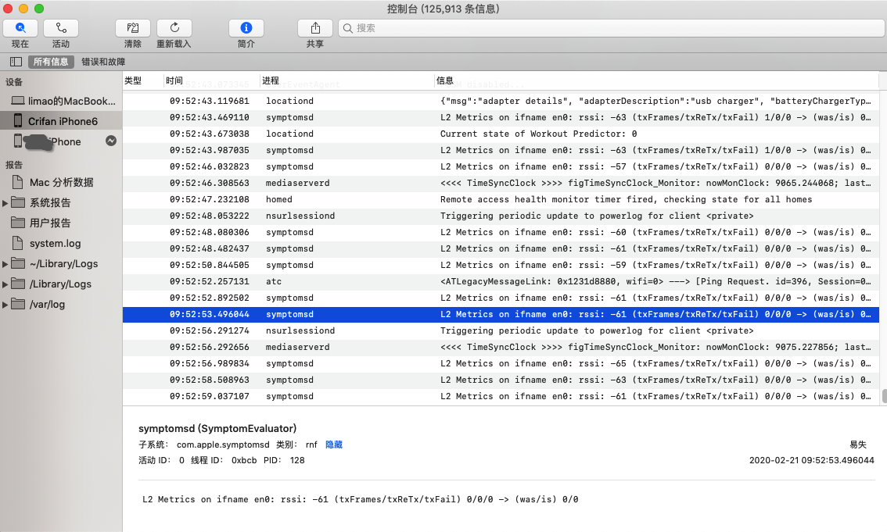

iPhone
TODO：
- 【已解决】已越狱iPhone的iOS中如何命令行创建一个大文件
- 【记录】iPhone手机恢复还原出厂设置
- 【已解决】iPhone中查看ARM版本：armv6、armv7
- 设备识别
- 【已解决】iPhone插入Mac后提示：可能不支持此配件
- 【已解决】Mac无法识别插入的已越狱iPhone7
- 状态栏
- 【已解决】iPhone中左上角状态栏中显示运营商的效果
- 【已解决】iPhone顶部状态栏中图标和信息的具体含义
- app管理
- 【已解决】Mac中如何获取到iPhone中自带应用设置的bundle ID
- 【无法解决】越狱iPhone中把iOS的app移动到/Applications目录
- 卡贴机
- 【已解决】iPhone卡贴机
- 【整理】购买二手iPhone测试机
- 文件管理
- 【已解决】已越狱iOS中如何通过ssh从iPhone拷贝出文件
- SSH
- 【已解决】给已越狱iPhone6修改ssh密码并开启ssh免密登录
- 【记录】给越狱iPhone7安装SSH并配置免密登录
- 【已解决】ssh登录iPhone失败：Host key verification failed
- SSH证书
- 【已解决】Mac中删除已有ssh证书和已安装到iPhone中的ssh证书
iOS开发期间，用到的最多的设备就是iPhone了，此处整理iPhone的相关开发心得。
iPhone的类型和尺寸
苹果的移动端的设备，典型都有iPhone，iPad等，所用的操作系统都是iOS。
其中用的最多是iPhone。
iPhone的设备类型，相对较固定，数量有限。
下面总结一下，不同的iPhone设备的屏幕相关的参数：
| 机型 | 屏幕宽高/单位点 | 屏幕模式 | 屏幕对角线长度 |
|---|---|---|---|
| iPhone 3GS | 320x480 | 1x | 3.5英寸 |
| iPhone 4 | 320x480 | 2x | 3.5英寸 |
| iPhone 5 | 320x568 | 2x | 4英寸 |
| iPhone 6 | 375x667 | 2x | 4.7英寸 |
| iPhone 6 Plus | 414×736 | 3x | 5.5英寸 |
对应的屏幕类型分辨率和像素的换算关系为：

开发相关设置
新版iPhone中的设置中有个开发者，有很多开发相关的设置。
其中和自动化测试有关的是：
设置->开发者->Enable UI Automation

对于后续自动化测试，或许有用。
iPhone真机的log日志查看
可以通过 控制台 查看iPhone真机的Log日志
如何打开控制台：
- 启动台Launch Pad -> 其他 -> 控制台
- Xcode->Window->Devices and Simulators->Devices

启动后，即可看到iPhone真机的log日志了：

也支持条件过滤，比如：
任一 包含：WebDriverAgentRunner


关闭悬浮球
iOS自动化测试期间，记得要关闭：悬浮球
【已解决】iPhone中关闭全屏显示的悬浮球
否则有时候会误触发，影响自动化测试